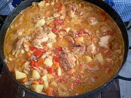

La vizcacha es un roedor parecido a la liebre originario de Sudamérica, que se utiliza, sobretodo en Argentina, Bolivia y Paraguay por el sabor de su carne.
Aca te traemos esta economica y facil receta para saber como se hace el escabeche de vizcacha facilménte y asi poder degustarlo al momento o conservarlo para otra ocasión.

Zona de procedencia
Ingredientes:
1 vizcacha
5 cebollas
4 zanahorias
1 pimiento
2 taza de agua
1 1/2 de aceite
2 tazas de vinagre de alcohol
1 puñado de sal
1 puñado de aji molido
1 puñado de pimienta negra molida
hierbas aromáticas
1 cabeza de ajo
A continuación los pasos a seguir
Como hacer escabeche de vizcacha:
Trocear la vizcacha y ponerla a hervir junto con una cebolla partida cuatro.
Después de 40 minutos, reserva la vizacacha, ycorta en trozo grandes las 4 zanahorias, el pimiento y las 4 cebollas restantes.
Luego coloca en una olla grande todo: primero las zanahorias cortadas, luego la mitad de la vizcacha, después las cebollas, luego los pímientos y la cabezade ajo, y encima de todo, la otra mitad de la vizcachca.
A continuación, echa tambien en la olla las tazas de agua, aceite y de vinagre de alcohol, y hiérvelo todo hasta que las verdurars esten bien cocidas.
Por último, adereza la vizcacha escabechda con un piuñado de sal, ají molido y pimienta negra molida a tu gusto, y cocínalo todo un poco más para que se integren biuen todos los sabores.
Y ahora si ya puedes desgustar tu escabeche de zicacha.